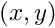
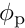
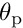
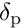
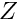
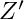
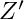

Celestial transformation parameters. More...
#include <cel.h>
Data Fields | |
| int | flag |
| int | offset |
| double | phi0 |
| double | theta0 |
| double | ref [4] |
| struct prjprm | prj |
| double | euler [5] |
| int | latpreq |
| int | isolat |
| struct wcserr * | err |
| void * | padding |
Detailed Description
The celprm struct contains information required to transform celestial coordinates. It consists of certain members that must be set by the user (given) and others that are set by the WCSLIB routines (returned). Some of the latter are supplied for informational purposes and others are for internal use only.
Returned celprm struct members must not be modified by the user.
Field Documentation
| int celprm::flag |
(Given and returned) This flag must be set to zero whenever any of the following celprm struct members are set or changed:
This signals the initialization routine, celset(), to recompute the returned members of the celprm struct. celset() will reset flag to indicate that this has been done.
| int celprm::offset |
(Given) If true (non-zero), an offset will be applied to  to force = (0,0) at the fiducial point, (  ,
,  ). Default is 0 (false).
). Default is 0 (false).
| double celprm::phi0 |
(Given) The native longitude, [deg], and ...
| double celprm::theta0 |
(Given) ... the native latitude, [deg], of the fiducial point, i.e. the point whose celestial coordinates are given in celprm::ref[1:2]. If undefined (set to a magic value by prjini()) the initialization routine, celset(), will set this to a projection-specific default.
| double celprm::ref |
(Given) The first pair of values should be set to the celestial longitude and latitude of the fiducial point [deg] - typically right ascension and declination. These are given by the CRVALia keywords in FITS.
(Given and returned) The second pair of values are the native longitude,  [deg], and latitude,  [deg], of the celestial pole (the latter is the same as the celestial latitude of the native pole, ) and these are given by the FITS keywords LONPOLEa and LATPOLEa (or by PVi_2a and PVi_3a attached to the longitude axis which take precedence if defined).
LONPOLEa defaults to (see above) if the celestial latitude of the fiducial point of the projection is greater than or equal to the native latitude, otherwise + 180 [deg]. (This is the condition for the celestial latitude to increase in the same direction as the native latitude at the fiducial point.) ref[2] may be set to UNDEFINED (from wcsmath.h) or 999.0 to indicate that the correct default should be substituted.
, the native latitude of the celestial pole (or equally the celestial latitude of the native pole, ) is often determined uniquely by CRVALia and LONPOLEa in which case LATPOLEa is ignored. However, in some circumstances there are two valid solutions for and LATPOLEa is used to choose between them. LATPOLEa is set in ref[3] and the solution closest to this value is used to reset ref[3]. It is therefore legitimate, for example, to set ref[3] to +90.0 to choose the more northerly solution - the default if the LATPOLEa keyword is omitted from the FITS header. For the special case where the fiducial point of the projection is at native latitude zero, its celestial latitude is zero, and LONPOLEa = 90.0 then the celestial latitude of the native pole is not determined by the first three reference values and LATPOLEa specifies it completely.
The returned value, celprm::latpreq, specifies how LATPOLEa was actually used.
| struct prjprm celprm::prj |
(Given and returned) Projection parameters described in the prologue to prj.h.
| double celprm::euler |
(Returned) Euler angles and associated intermediaries derived from the coordinate reference values. The first three values are the -,  -, and -Euler angles [deg], and the remaining two are the cosine and sine of the -Euler angle.
-, and -Euler angles [deg], and the remaining two are the cosine and sine of the -Euler angle.
| int celprm::latpreq |
(Returned) For informational purposes, this indicates how the LATPOLEa keyword was used
-
0: Not required, (== ) was determined uniquely by the
CRVALiaandLONPOLEakeywords. - 1: Required to select between two valid solutions of .
-
2: was specified solely by
LATPOLEa.
| int celprm::isolat |
(Returned) True if the spherical rotation preserves the magnitude of the latitude, which occurs iff the axes of the native and celestial coordinates are coincident. It signals an opportunity to cache intermediate calculations common to all elements in a vector computation.
| struct wcserr * celprm::err |
(Returned) If enabled, when an error status is returned this struct contains detailed information about the error, see wcserr_enable().
| void * celprm::padding |
(An unused variable inserted for alignment purposes only.)
Global variable: const char *cel_errmsg[] - Status return messages Status messages to match the status value returned from each function.